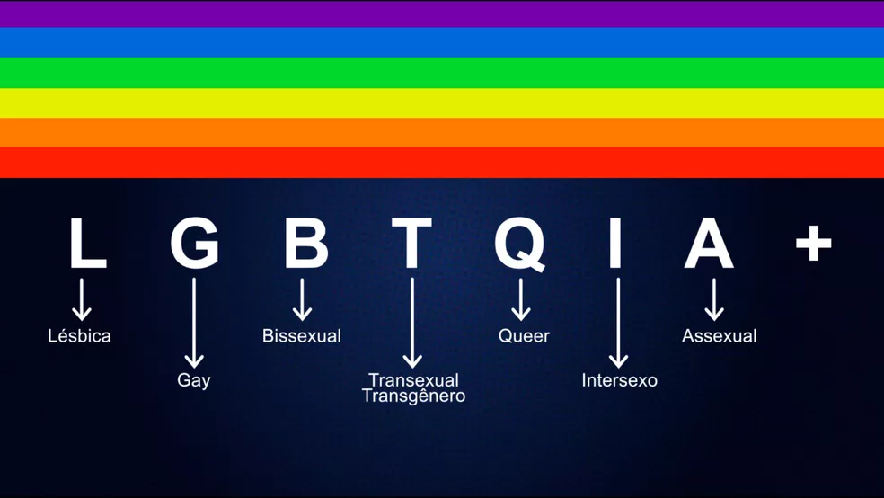

O Movimento LGBT é um movimento civil e social que busca defender a aceitação das pessoas LGBT na sociedade. Apesar de não ser um movimento centralizado e organizado nos seus mais diversos núcleos ao redor do mundo, existem inúmeras organizações não-governamentais que atuam nesse sentido, oferecendo apoio e representação para essa parcela da sociedade.
Sempre enfrentando ondas de preconceito e de ódio, o Movimento LGBT age em busca da igualdade social, seja por meio da conscientização das pessoas contra bifobia, homofobia, lesbofobia e transfobia, seja pelo aumento da representatividade das pessoas LGBT nos mais diversos setores da sociedade civil.
Naturalmente, como todo e qualquer movimento social, o Movimento LGBT, quando organizado, é composto por uma ampla rede de ativismo político e atuações culturais, incluindo as já famosas marchas de rua, bem como grupos voltados para a mídia, as artes e até mesmo as pesquisas acadêmicas.
LGBT é a sigla utilizada para denominar Lésbicas, Gays, Bissexuais, Travestis, Transexuais ou Transgêneros. Sendo utilizada desde meados dos 1990, a sigla é considerada uma adaptação de LGB, utilizada desde então para substituir o termo “gay” ao fazer referência à comunidade LGBT no fim dos anos 1980.
Como a terminologia “gay” não abrange ou representa toda a comunidade LGBT, ativistas da causa buscam por adaptações capazes de trazer inclusão para as mais diversas orientações sexuais e identidades de gênero existentes.
A sigla LGBT tem como principal objetivo promover a diversidade cultural com base nas questões de identidade sexual e gênero. Atualmente, é utilizada para se referir a qualquer pessoa que não se enquadra como heterossexual ou cisgênero. Dessa forma, algumas variantes da sigla surgiram ao longo dos anos, como:
Vale ressaltar que essas são apenas algumas variantes das siglas, de modo que é possível encontrar referências que utilizam siglas como LGBTI, LGBTIQ, LGBTPN, LGBTA, LGBTQA, entre outras. Dessa forma, a maneira mais utilizada de se fazer referência à comunidade é utilizando o termo LGBTPQIA+.